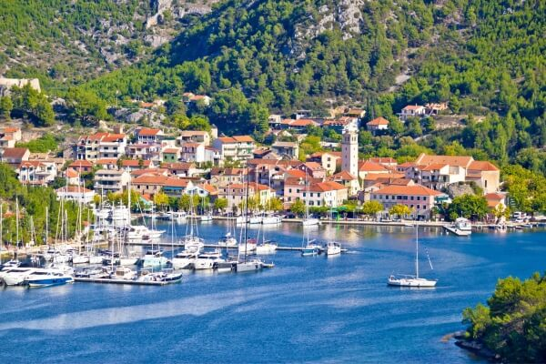

|  |
קצת על סקרדיןסקרדין היא עיירה קטנה וקסומה בקרואטיה, שנחשבת לשער הכניסה המפורסם לפארק הלאומי קרקה ולמפלי קרקה היפהפיים היא משלבת אווירה שקטה ומקומית עם נוף פסטורלי של נהר, הרים וים הרחובות הצרים והבתים האבן מעניקים לה תחושה אותנטית של עיירה דלמטית עתיקה, ויש בה נמל קטן ומסעדות ביתיות שמגישות אוכל מקומי טרי מה שמייחד את סקרדין הוא הקצב האיטי שלה והחיבור הישיר לטבע, שמאפשרים לצאת ממנה לשייט קצר ישירות אל המפלים או לטיולים רגליים באזור למרות שהיא קטנה, היא מהווה נקודת מוצא מושלמת לחוויה טבעית מרגיעה ושקטה, ומפתיעה עד כמה היא יפה ביחס לגודלה |